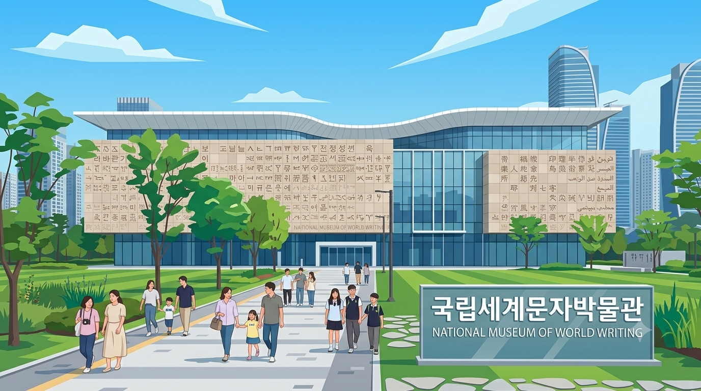

송도센트럴파크 MATHTOUR - 입구
인천 송도센트럴파크 한가운데, 펼쳐진 종이처럼 아름다운 국립세계문자박물관이 서 있습니다.
그런데 어느 날, 건축물 ‘페이지스’의 곡선이 점점 사라지기 시작했습니다.
곡선이 완전히 사라지면 박물관은 평범한 네모 상자로 변하고 맙니다.
▼ 클릭하여 계속하기
화자
대사 내용
▼ 클릭하여 대화 진행
◀ 이전
건너뛰기 ⏩
다음 ▶